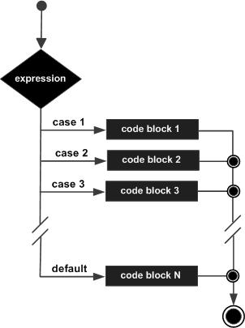

A switch statement allows a variable to be tested for equality against a list of values. Each value is called a case, and the variable being switched on is checked for each switch case.
Syntax
The syntax for a switch statement in C programming language is as follows −
switch(expression) {
case constant-expression :
statement(s);
break; /* optional */
case constant-expression :
statement(s);
break; /* optional */
/* you can have any number of case statements */
default : /* Optional */
statement(s);
}
The following rules apply to a switch statement −
- The expression used in a switch statement must have an integral or enumerated type, or be of a class type in which the class has a single conversion function to an integral or enumerated type.
- You can have any number of case statements within a switch. Each case is followed by the value to be compared to and a colon.
- The constant-expression for a case must be the same data type as the variable in the switch, and it must be a constant or a literal.
- When the variable being switched on is equal to a case, the statements following that case will execute until a break statement is reached.
- When a break statement is reached, the switch terminates, and the flow of control jumps to the next line following the switch statement.
- Not every case needs to contain a break. If no break appears, the flow of control will fall through to subsequent cases until a break is reached.
- A switch statement can have an optional default case, which must appear at the end of the switch. The default case can be used for performing a task when none of the cases is true. No break is needed in the default case.
Flow Diagram

Example
#include
int main () {
/* local variable definition */
char grade = 'B';
switch(grade) {
case 'A' :
printf("Excellent!\n" );
break;
case 'B' :
case 'C' :
printf("Well done\n" );
break;
case 'D' :
printf("You passed\n" )
break;
case 'F' :
printf("Better try again\n" );
break;
default :
printf("Invalid grade\n"
}
printf("Your grade is %c\n", grade );
return 0;
}
When the above code is compiled and executed, it produces the following result −
Well done
Your grade is B